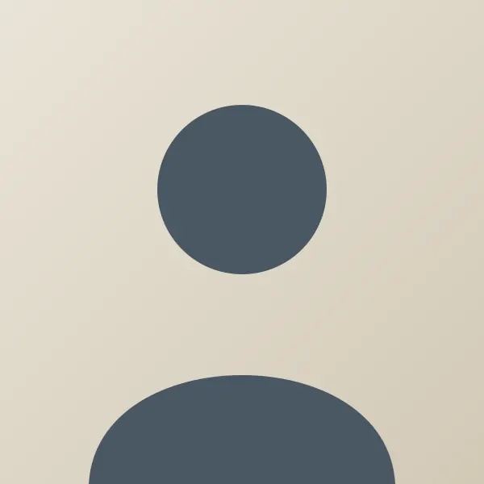

Le Muséum
Un lieu de science ouvert à toutes et à tous, au bord du quai des Tanneurs.
Notre histoire
Fondé en 1868 dans l'ancienne halle aux draps, le Muséum n'a jamais vraiment cessé de déménager… à l'intérieur de ses propres murs.
Les collections, d'abord rassemblées par une société savante locale, se sont enrichies de dons, d'échanges et de campagnes de fouilles. Aujourd'hui, moins d'un objet sur dix est exposé : le reste est conservé dans les réserves, où il est étudié, restauré et prêté à d'autres musées.
Repères
1868
Ouverture dans l'ancienne halle aux draps.
1903
Construction de la grande galerie et de sa verrière.
1957
Arrivée du grand moulage de sauropode.
1998
Création du service des publics.
2021
Ouverture des réserves visitables.
2026
Rénovation de la salle des minéraux.
Nos missions
Conserver
Inventorier, protéger et restaurer 48 000 spécimens.
Transmettre
Expositions, ateliers et visites pour tous les publics, de la crèche à l'université.
Rechercher
Accueillir chercheuses et chercheurs, et partager leurs découvertes avec le public.
Le mot de la direction

Un muséum n'est pas une collection d'objets immobiles. C'est une conversation qui dure depuis 158 ans entre celles et ceux qui ont observé le monde et celles et ceux qui l'observeront demain. Chaque visite y ajoute une phrase. Merci de venir écrire la vôtre.
La direction du Muséum